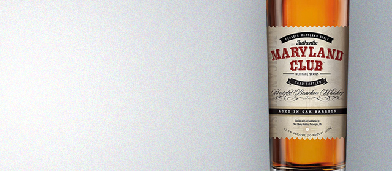
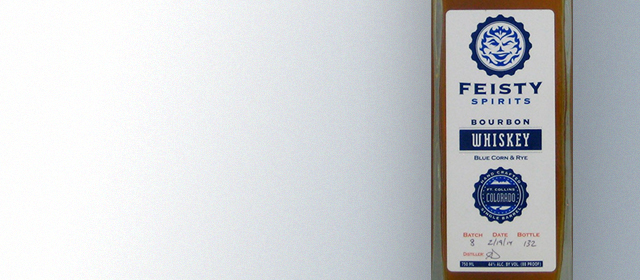
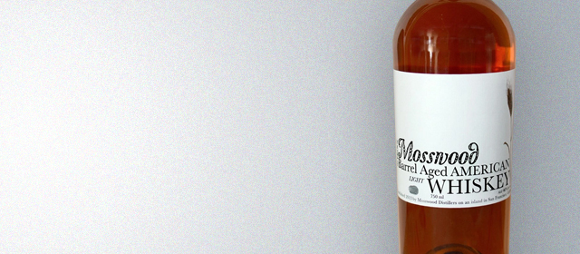

Maryland Club Straight Bourbon
78
Warm amber in color the bourbon has a strong cooked cereal presence on the nose. Honey, grass, caramel, and orange zest are present on the palate with a spiced apple finish. Notes of cinnamon and clove linger in the bourbon’s earthy finish.
Review by: htson

Feisty Spirits Blue Corn Bourbon
81
Deep amber with hints of ruby in color. Very soft honey nose with subtle rye characteristics. Rye spice is evident on the initial attack with notes of orange, dark chocolate, and burnt caramel.
Review by: htson

Mosswood Nocino Barrel-Aged American Whiskey
90
Mosswood's unique barrel finishes are always interesting, and the nocino finish is no exception. The light whiskey is well-suited to picking up nuances of the walnut spirit: a mild green note on the aroma, a roasty flavor, and a hint of complementary...
Review by: htson